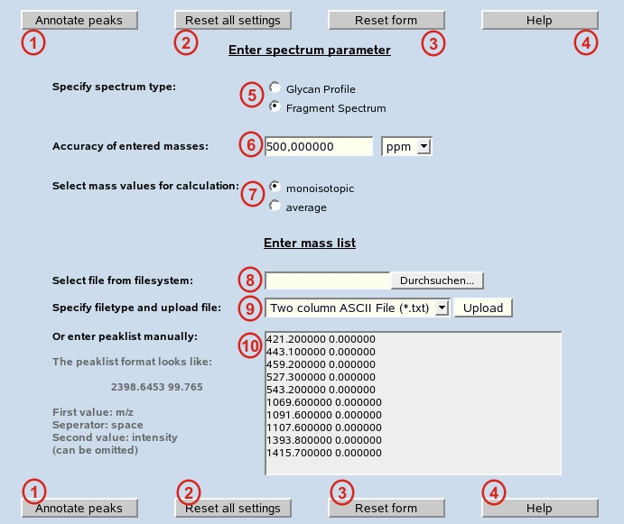

Annotate Peaks:
Calculation for all mass values from the peak list below is started using all parameters already set on the pages "mass", "residue", "ion/charge" and "modifications".
Reset all settings:
All settings manually performed on the pages "mass", "residue", "ion/charge" and "modifications" are cleared and default settings are set.
Reset form:
All settings manually performed on this form are cleared and default settings are set.
Help:
Starts Glyco-Peakfinder help files.
Specify spectrum type:
spectrum type can be chosen between "glycan profile" and "fragment spectrum". In case of glycan profile only entire structures can be calculated. All other options like modification at reducing end or persubstitution can be selected.
Accuracy of the entered masses:
Depending on the acquisition method an accuracy level for the given mass list should be specified. You can choose between a relative accuracy level im ppm (parts per milion) or an absolute value for the entire spectrum.
Select mass values for calculation:
Depending on the resolution of the instrument used, the accuracy of the mass values can be selected.
Select file from file system:
Select file from your local file system, that has the selected file format (see 9).
Specify file type and upload file:
The selected file type can be a simple ascii file or a more specific vendor-defined format.
Enter peak list manually:
m/z values and corresponding intensity values can be entered manually or input by copy/paste from another programme. The given intensity value is not mandatory and has no influence on the calculated results. m/z and intensity have to be separated by a single space.